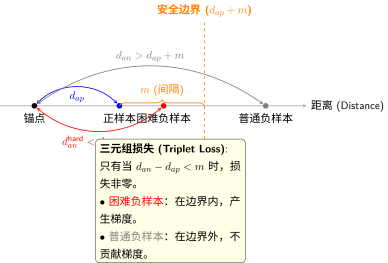
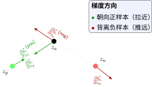

第三部分：核心损失函数设计#
本部分深入探讨度量学习中最重要的损失函数设计，理解每种损失函数的动机、数学原理和适用场景。
3.1 从Cross-Entropy到Metric Learning损失#
如果你熟悉分类任务，你可能已经习惯了 Cross-Entropy Loss：
Cross-Entropy在做什么？
优化目标：让正确类别的概率尽可能高
输入：网络输出的 logits → Softmax → 概率分布
标签：one-hot 编码的类别标签
核心假设：类别集合是固定的（封闭世界）。
为什么Metric Learning不用Cross-Entropy？
场景：人脸识别系统
阶段 |
Cross-Entropy做法 |
问题 |
|---|---|---|
训练时 |
学习1000个人的分类器 |
固定类别 |
测试时 |
第1001个人出现 |
“这个人一定是那1000人中的一个！” |
结果 |
强制错误分类 |
封闭世界假设的限制 |
Metric Learning的做法：
学习一个特征提取器，把人脸变成向量
计算新面孔与数据库中所有人的向量距离
距离最近的，就是匹配结果
如果所有距离都很大 → 可能是陌生人（拒绝识别）
关键优势：支持开放集识别！
损失函数对比
特性 |
Cross-Entropy |
Metric Learning Loss |
|---|---|---|
输入 |
单个样本 + 类别标签 |
样本对/三元组 + 相似性标签 |
输出 |
类别概率分布 |
特征向量 + 距离 |
优化目标 |
正确类别的概率最高 |
相似样本距离近，不相似样本距离远 |
支持新类别 |
❌ 需要重新训练 |
✅ 直接计算距离 |
拒绝机制 |
❌ 无法拒绝 |
✅ 距离阈值判断 |
适用场景 |
封闭集分类 |
开放集识别、检索、验证 |
3.1.1 推拉机制（Pull-Push Mechanism）#
既然我们优化的是距离，损失函数的设计就遵循一个核心直觉：
核心直觉
“拉近正样本，推远负样本”（Pull positive, push negative）
这是什么意思？
关键概念
正样本（Positive）：同一类别的样本
例如：同一个人的人脸照片
目标：与锚点距离近
负样本（Negative）：不同类别的样本
例如：不同的人的人脸照片
目标：与锚点距离远
锚点（Anchor）：参考样本
正样本和负样本的比较基准
直观理解：
就像整理房间：同类物品要放在一起，不同类物品要分开摆放。
这个机制需要解决几个关键问题：
问题1：如何平衡推拉？
如果过度拉近正样本，可能导致模型过拟合——两个极其相似的样本在特征上几乎完全相同，丢失了细微的差异信息。如果过度推远负样本，则消耗了大量计算资源在已经分离得很好的样本对上。
解决：引入间隔（Margin）
间隔机制确保负样本与锚点之间保持一个合理的距离：“已经足够远就不需要再推了，推那些不够远的”。
问题2：什么是"足够远"？
这是由任务特性决定的。在人脸识别中，"不同人"可能比"同人的不同状态"差异还大；但在细粒度分类（如不同鸟类品种）中，不同类别间的差异可能很小。
解决：自适应间隔
根据样本难度、类别难度等因素动态调整间隔，这是高级损失函数的优化方向之一。
3.1.2 优化的基本形式#
度量学习的损失函数通常包含两部分：
损失函数组成
组成部分 |
作用 |
典型形式 |
特点 |
|---|---|---|---|
\(\mathcal{L}_{\text{pull}}\) |
拉近正样本 |
距离平方 \(d^2\) |
连续可导 |
\(\mathcal{L}_{\text{push}}\) |
推远负样本 |
Hinge损失 \(\max(0, m - d)\) |
引入间隔 |
\(\lambda\) |
平衡系数 |
超参数（通常1.0） |
控制推拉权重 |
不同的损失函数在如何定义这两个部分、如何采样样本对方面有所区别。
3.2 对比损失（Contrastive Loss）#
3.2.1 基本定义#
Contrastive Loss
度量学习的奠基性工作[HCL06]，用于Siamese网络。
输入：样本对 \((x_i, x_j)\)，标签 \(y_{ij} \in \{0, 1\}\)
\(y_{ij} = 1\)：相似（同类）
\(y_{ij} = 0\)：不相似（不同类）
损失函数：
参数说明
\(d_{ij} = \|f_\theta(x_i) - f_\theta(x_j)\|_2\)：嵌入空间中的欧氏距离
\(m\)：间隔（margin），通常设置为1.0
\(f_\theta\)：嵌入网络
3.2.2 两个分支的分析#
正样本对分支（\(y_{ij} = 1\)）
梯度分析#
梯度：
梯度解读
方向：沿着"朝向另一个样本"的方向
大小：与距离成正比
效果：距离越大，拉近的力度越强
负样本对分支（\(y_{ij} = 0\)）
两个子情况：
若 \(d_{ij} \geq m\)：已经满足间隔，损失为0，梯度为0
若 \(d_{ij} < m\)：违反间隔约束，损失为 \((m - d_{ij})^2\)
梯度分析
梯度（当 \(d_{ij} < m\) 时）：
梯度解读
符号：与pull分支相反（负号表示推远）
当 \(d_{ij} \to 0\)：梯度接近 \(-2m\)，强烈推远
当 \(d_{ij} \to m\)：梯度接近0，停止推动
关键洞察：
距离小的负样本：需要大力推远
距离大的负样本：已经满足约束，无需优化
3.2.3 间隔设计的重要性#
间隔 \(m\) 是超参数，需要仔细调节。
间隔选择的权衡
间隔设置 |
效果 |
问题 |
|---|---|---|
太小 (\(m < 0.3\)) |
负样本容易满足约束 |
训练停滞，嵌入空间无法充分分离不同类别 |
适中 (\(m \approx 0.5-1.0\)) |
提供适度约束 |
训练稳定，效果良好 |
太大 (\(m > 2.0\)) |
大部分负样本违反约束 |
梯度方向过于一致，可能导致特征坍缩 |
经验值：对于归一化到单位球面的特征，通常设置 \(m \in [0.5, 2.0]\)。
间隔的几何意义
间隔 \(m\) 定义了类间差异的最小尺度：
在嵌入空间中，不同类别的样本之间至少保持 \(m\) 的距离
无论视觉上多么相似，都要强制执行这个分离
这确保了决策边界的清晰性
类比：想象在房间里放家具，间隔就像是"安全距离"——即使两件家具看起来相似，也要保持足够的距离以便区分。

3.2.4 实践中的挑战#
挑战1：样本对生成
问题：如何构造有效的样本对？
选择 |
策略 |
效果 |
|---|---|---|
正样本对 |
同一类别的随机对 |
简单但可能太简单 |
正样本对 |
困难正样本 |
更有信息量 |
负样本对 |
所有跨类别对 |
计算量大 |
负样本对 |
困难负样本 |
高效但有风险 |
解决方案：使用难例挖掘（Hard Mining）策略。
挑战2：类别不平衡
问题：某些类别样本很多，某些很少。随机采样会产生偏向多数类别的正样本对。
例子：类别A有1000个样本，类别B有100个样本。随机采样时，类别A的样本对被采中的概率是类别B的100倍！
解决方案：
按类别均匀采样：每个类别被选中的概率相等
难例挖掘自动平衡：困难样本往往来自少数类
挑战3：梯度稀疏
问题：在训练后期，大多数负样本对已经满足间隔，梯度为0，训练停滞。
现象：
训练损失不再下降
验证性能不再提升
模型陷入局部最优
解决方案：
动态降低间隔：训练后期减小 \(m\)
使用Semi-Hard Mining：选择适度困难的样本
增加Batch Size：提供更多负样本选择
3.2.5 代码实现示例#
1import torch
2import torch.nn as nn
3import torch.nn.functional as F
4
5class ContrastiveLoss(nn.Module):
6 """
7 对比损失实现
8
9 Args:
10 margin: 间隔参数，默认1.0
11 """
12 def __init__(self, margin=1.0):
13 super(ContrastiveLoss, self).__init__()
14 self.margin = margin
15
16 def forward(self, output1, output2, label):
17 """
18 Args:
19 output1, output2: 样本对特征 [B, D]
20 label: 相似性标签 [B], 1表示同类, 0表示不同类
21
22 Returns:
23 loss: 标量损失值
24 """
25 # 计算欧氏距离
26 euclidean_distance = F.pairwise_distance(
27 output1, output2, keepdim=True
28 ) # [B, 1]
29
30 # 正样本对损失: label * d^2
31 loss_positive = label * torch.pow(euclidean_distance, 2)
32
33 # 负样本对损失: (1-label) * max(0, m-d)^2
34 loss_negative = (1 - label) * torch.pow(
35 torch.clamp(self.margin - euclidean_distance, min=0.0),
36 2
37 )
38
39 # 平均损失
40 loss_contrastive = torch.mean(loss_positive + loss_negative)
41
42 return loss_contrastive
关键实现细节：
torch.clamp(..., min=0.0)：实现 \(\max(0, \cdot)\)F.pairwise_distance：计算欧氏距离keepdim=True：保持维度便于广播
3.3 三元组损失（Triplet Loss）#
3.3.1 动机与定义#
Triplet Loss [SKP15]
深度度量学习的里程碑工作（FaceNet, 2015），通过引入相对比较，解决了对比损失"独立优化"的问题。
输入：三元组 \((x_a, x_p, x_n)\)
\(x_a\)：锚点（Anchor）
\(x_p\)：正样本（Positive），与锚点同类
\(x_n\)：负样本（Negative），与锚点不同类
核心约束：
约束解读
几何意义：锚点到负样本的距离，必须比到正样本的距离大至少 \(m\)。
等价表述：
损失函数
损失解读：
损失为0：满足约束 \(d(x_a, x_n) - d(x_a, x_p) > m\)
损失为正：违反约束，需要优化
优化方向：减小 \(d(x_a, x_p)\)，增大 \(d(x_a, x_n)\)
3.3.2 相对约束的优势#
场景分析
三个样本：
A和B：属于同一类但差异大（如同一个人的正面和侧面照）
A和C：属于不同类但视觉相似（如金毛犬和拉布拉多犬）
对比损失的问题：
优化目标：\(d(A,B) \to 0\) 且 \(d(A,C) \to m\)
产生冲突：既要拉近A,B，又要推远A,C
三元组损失的解决方案：
优化目标：\(d(A,C) - d(A,B) > m\)
相对关系：只要求 \(d(A,C) > d(A,B) + m\)
灵活性：允许A,B距离较大，只要比A,C小即可
重要
关键洞察
这种差异在难例上尤其重要：
当\(A,B\)视觉差异大时：
对比损失：强制拉近，可能破坏特征语义
三元组损失：允许保持适当距离，只要比A,C近即可
核心优势：关注相对排序而非绝对距离！
3.3.3 梯度分析#
假设损失非零（即 \(d(x_a, x_n) - d(x_a, x_p) < m\)），计算梯度。
设 \(d_{ap} = \|z_a - z_p\|\)，\(d_{an} = \|z_a - z_n\|\)。
对锚点特征 \(z_a\) 的梯度
梯度解读：
第一项：朝向正样本 \(z_p\) 的方向
第二项：背离负样本 \(z_n\) 的方向
平衡：当\(z_a\)接近两者中点时，两项相互抵消
强度：距离越小，梯度越大
对正样本 \(z_p\) 的梯度
梯度解读：
方向：背离锚点方向（朝向 \(z_a\)）
原因：\(z_a - z_p\) 指向 \(z_p\)，负号使其反向指向 \(z_a\)
效果：将正样本拉向锚点
对负样本 \(z_n\) 的梯度
梯度解读：
方向：背离锚点方向（远离 \(z_a\)）
效果：将负样本推离锚点
强度：距离越小，推动力越强
梯度可视化

3.3.4 三元组采样策略#
三元组损失的效果高度依赖于采样策略。以下是主要策略的演进：
策略1：离线难例挖掘（Offline Hard Mining）
流程（每个epoch后）：
用当前模型计算所有样本特征
对每个锚点找最困难正样本和最困难负样本
下个epoch只使用这些困难三元组
优点：找到全局最困难的样本 缺点：计算量大，每个epoch需要\(O(N^2)\)距离计算
适用场景：小规模数据集，追求最优性能
策略2：在线难例挖掘（Online Hard Mining）
1import torch
2
3def online_hard_negative_mining(anchor, positive, negative):
4 """
5 在线难例挖掘
6
7 Args:
8 anchor: 锚点特征 [B, D]
9 positive: 正样本特征 [B, D]
10 negative: 负样本特征 [B, D]
11
12 Returns:
13 hardest_positive_idx: 最难正样本索引
14 hardest_negative_idx: 最难负样本索引
15 """
16 # Hardest positive: 同类别中距离最远
17 d_ap = torch.norm(anchor - positive, dim=1)
18 hardest_positive_idx = torch.argmax(d_ap)
19
20 # Hardest negative: 不同类别中距离最近
21 d_an = torch.norm(anchor - negative, dim=1)
22 hardest_negative_idx = torch.argmin(d_an)
23
24 return hardest_positive_idx, hardest_negative_idx
优点：高效，适合大规模训练 缺点：可能过于困难，导致训练不稳定
适用场景：大多数实际应用
重要
策略3：Semi-Hard Negative Mining（推荐）
FaceNet论文的核心策略，选择满足以下条件的负样本：
为什么Semi-Hard效果最好？
负样本类型 |
条件 |
问题 |
|---|---|---|
太难的 |
\(d(x_a, x_n) < d(x_a, x_p)\) |
梯度方向可能错误，导致训练崩溃 |
太简单的 |
\(d(x_a, x_n) \geq d(x_a, x_p) + m\) |
已经满足约束，不贡献梯度 |
Semi-Hard |
\(d(x_a, x_p) < d(x_a, x_n) < d(x_a, x_p) + m\) |
✅ 适度难度，稳定训练 |
关键洞察：
提供明确优化方向
避免极端困难样本
训练最稳定，效果最好
策略4：Distance-Weighted Sampling
根据距离分布加权采样负样本：
温度参数 \(t\) 的作用
小 \(t\)（如 \(t=0.1\)）：倾向于困难样本
大 \(t\)（如 \(t=1.0\)）：倾向于随机采样
适中 \(t\)（如 \(t=0.5\)）：平衡采样
温度参数 \(t\) 的作用
小 \(t\)（如 \(t=0.1\)）：倾向于困难样本
大 \(t\)（如 \(t=1.0\)）：倾向于随机采样
适中 \(t\)（如 \(t=0.5\)）：平衡采样
3.3.5 实践建议#
重要
Triplet Loss最佳实践
1. Batch Size Matters
每类至少4-10个样本
Batch size建议32-128
提供足够的负样本池
2. 特征归一化
将嵌入向量归一化到单位球面
使用
F.normalize(embeddings, p=2, dim=1)稳定梯度，便于可视化
3. 间隔调整策略
训练阶段 |
Margin |
原因 |
|---|---|---|
初期（0-10 epoch） |
0.3 |
让模型更容易学习 |
中期（10-50 epoch） |
0.5 |
标准训练 |
后期（50+ epoch） |
0.1-0.3 |
精细调整 |
4. 监控关键指标
hardest_positive：最难正样本距离hardest_negative：最难负样本距离hardest_positive < hardest_negative：基本要求hardest_negative - hardest_positive：应逐渐增大
5. 预热训练
前几个epoch使用随机采样（简单样本）
后期引入Semi-Hard Mining（困难样本）
避免一开始就使用困难样本导致训练崩溃
3.4 高级损失函数#
3.4.1 N-pair Loss#
动机
Triplet Loss一次只用一个负样本，效率较低。N-pair Loss [Soh16] 同时使用\(K\)个负样本，更充分利用batch内的样本。
定义
给定锚点\(z_a\)，正样本\(z_p\)，负样本集合\(\{z_{n_1}, ..., z_{n_K}\}\)：
这本质上是softmax分类问题，将正样本当作正类，所有负样本当作负类。
优势
每个样本对都获得梯度：没有"满足约束就无关"的问题
训练稳定：梯度更平滑，不像triplet损失在0点有跳跃
内存高效：可以与batch训练完美结合
3.4.2 Angular Loss (Angle Margin Loss)#
动机
传统损失函数关注欧氏距离，但在角度空间（余弦相似度）上优化有时更稳定：
重要
ArcFace (Additive Angular Margin Loss)
参数说明
\(\theta_{y_i}\)：特征\(z\)与类别\(y_i\)权重向量\(W_{y_i}\)的夹角 $\(\cos\theta_{y_i} = \frac{W_{y_i} \cdot z}{\|W_{y_i}\| \|z\|}\)$
\(m\)：角度间隔，典型值0.5
\(s\)：尺度因子（如64），放大对角度的敏感度
直觉解读：在角度空间中，添加额外间隔 \(m\) 使同类样本更紧凑、决策边界更清晰、几何意义明确。
CosFace (Large Margin Cosine Loss)
对比：
ArcFace：在角度上添加间隔 \(\cos(\theta + m)\)
CosFace：在余弦值上添加间隔 \(\cos\theta - m\)
性能：两者相近，ArcFace几何解释更清晰，CosFace实现更简单。
3.4.3 Proxy Loss#
动机
当类别数 \(C\) 很大时，使用所有负样本计算损失非常昂贵。Proxy Loss [MATL+17] 为每个类别学习一个"代理向量"（proxy），样本只需与代理比较，无需互相比较。
定义
为每类 \(c\) 学习代理向量 \(w_c\)。样本对的损失：
对所有\(j \neq y_i\)。
优势
时间复杂度从 \(O(N)\) 降到 \(O(C)\)
无需精心采样策略：所有代理始终参与损失计算
可以处理新类别：只需添加新代理
局限
每类只有1个代理，难以表达类内多样性
代理可能与某些样本距离很远，损失可能对它们不敏感
3.4.4 Center Loss#
动机 [WZLQ16]
Softmax学习判别性特征，但可能忽略类内紧凑性。Center Loss显式优化类内紧凑度。
定义
为每类维护一个类中心\(C_y\)：
类中心通过mini-batch内的样本平均动态更新：
其中 \(\delta(y_i = j)\) 是指示函数。
联合训练
通常与Softmax联合使用：
Softmax确保类间分离，Center Loss确保类内紧凑。
直觉
想象每个类别是一个"云团"，Center Loss压缩云团的内部，Softmax把不同云团推得足够远。
3.4.5 损失函数选择指南#
损失函数 |
适用场景 |
优势 |
劣势 |
|---|---|---|---|
Contrastive |
小规模数据，简单验证任务 |
简单直观，计算快 |
独立优化，易受采样影响 |
Triplet |
通用度量学习 |
捕获相对关系，效果好 |
采样复杂，训练慢 |
N-pair |
大规模多类任务 |
训练稳定，内存高效 |
需要大批量 |
Angular (ArcFace/CosFace) |
人脸识别、细粒度分类 |
性能优异，几何清晰 |
需要调整超参\((s, m)\) |
Proxy |
超多类别(>1K) |
高效，处理新类 |
每类单代理，表达能力受限 |
Center |
需要紧致类内结构 |
增强类内紧凑性 |
通常作为辅助损失 |
3.5 损失函数的比较与权衡#
3.5.1 基于距离 vs 基于角度#
维度 |
基于距离 |
基于角度 |
|---|---|---|
度量 |
欧氏距离 \(|z_i - z_j|_2\) |
余弦相似度 \(\frac{z_i \cdot z_j}{|z_i||z_j|}\) |
优化空间 |
无约束欧氏空间 |
单位球面（归一化向量） |
鲁棒性 |
对尺度敏感 |
对尺度不敏感 |
适用场景 |
通用度量学习 |
人脸识别等需要角判别的任务 |
基于角度的方法在人脸识别中特别成功，因为：
人脸的特征向量长度的方差相对较小，主要信息在方向上
角度margin的几何意义更清晰：相当于在球面上旋转决策边界
实践建议： 初学者先尝试基于距离的方法（Triplet Loss），遇到性能瓶颈时再尝试基于角度的方法（ArcFace）。
3.5.2 计算复杂度对比#
假设：
\(N\) 个样本
\(B\) 个批量大小
\(C\) 个类别
损失函数 |
每样本计算量 |
总复杂度 |
内存需求 |
|---|---|---|---|
Contrastive |
\(O(1)\) (单对) |
\(O(P)\) (\(P\)是样本对数) |
低 |
Triplet |
\(O(1)\) (三元组) |
\(O(T)\) (\(T\)是三元组数) |
中 |
N-pair |
\(O(B)\) (所有负样本) |
\(O(NB)\) |
高 (需存整个batch特征) |
Angular |
\(O(C)\) (所有类别) |
\(O(NC)\) |
中 (需存所有类别权重) |
Proxy |
\(O(C)\) (所有代理) |
\(O(NC)\) |
低 (只需代理, 不需样本特征) |
选择准则：
样本数、类别数都小（\(N,C < 1000\)）：随意选择
样本数小、类别数大（\(N < 1000, C > 1000\)）：N-pair, Angular
样本数大、类别数小（\(N > 10K, C < 1000\)）：Triplet, Proxy
样本数大、类别数大（\(N, C > 10K\)）：Proxy
3.5.3 训练稳定性#
稳定的损失： \(N\)-pair、Angular、Center Loss - 损失函数平滑，梯度连续
不稳定的损失： Triplet（采用hard mining时）、Contrastive - 在样本对满足约束时梯度突变为0
应对不稳定的方法：
降低学习率：更温和地更新模型
使用Semi-Hard Mining：避免极端困难样本
预热训练：前几个epoch用简单样本
梯度裁剪：限制梯度最大值
小结#
本部分核心要点
损失函数设计是度量学习的艺术。从简单的Contrastive Loss到复杂的Angular Loss，核心思想始终是：
“拉近正样本，推远负样本”（Pull positive, push negative）
但在如何实现这一目标上不断创新：
高级损失函数的设计哲学
设计原则 |
实现方式 |
代表方法 |
|---|---|---|
利用更多信息 |
从成对→三元组→N个负样本 |
Contrastive → Triplet → N-pair |
优化稳定性 |
平滑的损失函数、合理采样 |
Semi-Hard Mining、Distance-Weighted |
任务适配 |
人脸识别用角度，通用任务用距离 |
ArcFace vs Triplet Loss |
计算效率 |
代理向量减少比较数量 |
Proxy Loss |
类内紧凑性 |
显式优化类内距离 |
Center Loss |
实践中的经验法则
1. 从简单到复杂
Triplet Loss + Semi-Hard Mining（大多数场景足够）
效果不够好 → 尝试ArcFace/CosFace
类别数极大 → 考虑Proxy Loss
2. 采样策略 > 损失函数复杂度
精心设计的采样比复杂损失函数更重要
Semi-Hard Mining是最稳定的策略
3. 监控训练曲线
hardest_positive / hardest_negative 距离
验证集 Recall@K
t-SNE可视化
4. 损失函数组合
Triplet + Softmax（增强判别性）
Softmax + Center Loss（增强类内紧凑）
5. 超参数调优
Margin：从0.5开始，根据数据调整
Batch Size：每类至少4个样本
学习率：1e-4是安全的起点
最终洞见
设计"好"的损失函数本质是设计"好"的优化目标，让模型自然地学习到数据中的相似性结构。
关键问题：如何定义"好的"相似性？
对比损失：绝对距离
三元组损失：相对排序
角度损失：角度间隔
代理损失：类别代理
选择取决于你的任务需求和数据特点！
参考文献
Jiankang Deng, Jia Guo, Niannan Xue, and Stefanos Zafeiriou. Arcface: additive angular margin loss for deep face recognition. In Proceedings of the IEEE/CVF conference on computer vision and pattern recognition, 4690–4699. 2019.
Raia Hadsell, Sumit Chopra, and Yann LeCun. Dimensionality reduction by learning an invariant mapping. In 2006 IEEE computer society conference on computer vision and pattern recognition (CVPR'06), volume 2, 1735–1742. Ieee, 2006.
Yair Movshovitz-Attias, Alexander Toshev, Thomas K Leung, Sergey Ioffe, and Saurabh Singh. No fuss distance metric learning using proxies. In International Conference on Computer Vision, 2544–2554. IEEE, 2017.
Florian Schroff, Dmitry Kalenichenko, and James Philbin. Facenet: a unified embedding for face recognition and clustering. In Proceedings of the IEEE conference on computer vision and pattern recognition, 815–823. 2015.
Kihyuk Sohn. Improved deep metric learning with multi-class n-pair loss objective. In Advances in neural information processing systems, 1857–1865. 2016.
Hao Wang, Yitong Wang, Zheng Zhou, Ji Xing, Dihong Gong Zheng, Zhifeng Li, Wei Liu, and others. Cosface: large margin cosine loss for deep face recognition. In Proceedings of the IEEE conference on computer vision and pattern recognition, 5265–5274. 2018.
Yandong Wen, Kaipeng Zhang, Zhifeng Li, and Yu Qiao. A discriminative feature learning approach for deep face recognition. In European conference on computer vision, 499–515. Springer, 2016.
贡献者与修订历史
查看详细修订记录
-
4b228f72026-03-09 - Heyan Zhu: Fix tikz diagrams -
e1bf5e02026-03-09 - Heyan Zhu: Add metric leaning